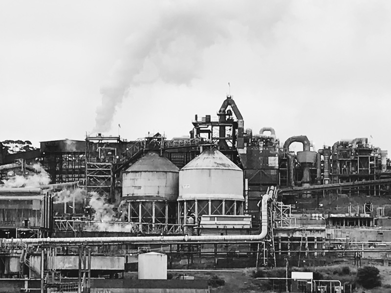
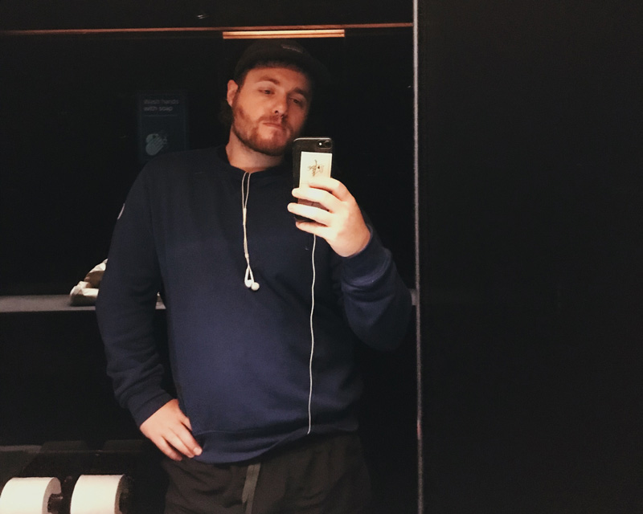

I've spent the week in Hobart working away trying to do a number of things

Reflection:
The last year was good creatively, I began to practice structuring my projects, calling them finished or not finished. Making them measurable, letting them fail. It was not as smooth and precise as I thought it would be, but it wasn't too bad either.
Some projects ballooned out more than I expected, actually all of them did. I can learn from this!
This was a really nice project. The typography and website were just okay, but the writing was super fun and so was the drawing. I want to do more comics with felt tip pens, a really cool medium!
Maybe look at ways to make it less consumptive tho, refillable pens?
Home made paint pens? Paint sticks? We will see.
The point is, colour is fun.
The way it was no pressure too was cool, and the requirement to draw things that looked right was not as much of a challenge as I expected.
Maybe we go for something more complex next? Hmm perhaps, perhaps not.
This started out with plot and was really fun, I learnt a lot building it.
It was interesting to see just how easy it is to make a complex feeling application, but also how quickly you run into bugs and complexity!
The architecture was the biggest learning experience. Other lessons include:
I spent literal months on this, carefully making a 3D cowboy, only to realise I was focusing on the wrong thing. I should remember that the first measure for these projects is me, only later should other people be considered.
The 3D was fun, but I would have been happy with the simple thing - and I am now. That being said, I think I can learn from the 3D experience, and I still really want to make more 3D comics.
The most important part still lies ahead though! This will have > 300 comics before I'm finished - how exciting.
The pledge was, is, a difficult project. It's loads bigger than either of us expected. That being said, I've learnt heaps and heaps working on it, and for that I am grateful. I didn't work on it in Hobart.
I didn't do very much work on this, but I did a little reflection and I'm happy with the changes I have made / will make.
It is good to realise when something doesn't need to be worked on, when it can be left as it is and you can move on.
I'm excited too for "the yard". Seeing how easy and fun it was to use .md files on beaker to make a website, there's no reason I can't have the same fun here. Also, hopefully, I'll get a few more cartoon projects up.
Where and what for? Who can say, but the bee comic I made still makes me laugh now, and I want more of that.
Could lead to some more reflection:
Questions, questions, questions.
I want to read and reflect more, then bring that into my practice.
I want to do more small projects, quantity over quality. Critical mass. yada yada yada.
Also, small projects can be polished easier and quicker. AND I learn so much more, and quicker with small projects! What good is a big project? Who does it help?? Small projects are the goal.
Maybe I name the year? Give it a theme.2022: Make it smaller.
2022: Small
